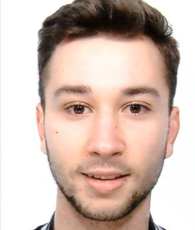

Paolo Di Biase is a PhD student in Computer Science at the Gran Sasso Science Institute (GSSI).
He earned his BSc from the University of Molise (UniMol) in 2023 and began an MSc in Software Systems Security the same year, specializing in program analysis and software verification.
In January 2025, he started collaborating with Gennaro Parlato in the Program Analysis in the Clouds Lab (PAC Lab) through a UniMol research scholarship, working on bounded model checking for concurrent programs and the parallelization of SAT solving.
In February 2025, he joined the Erasmus+ Traineeship program and completed a two-month internship at Diffblue in Oxford (UK), under the supervision of Peter Schrammel, contributing to the research for his master’s thesis.
He completed his MSc in October 2025 and joined GSSI as a PhD student in November 2025.
His CV is available here.